# load relevant libraries
library(ggplot2)03-analysis-plan
Anticipated data analysis
In this document, we will formalise the sttistical analysis that we intend to do using the data we collect. We will go through each of the three experiments, specify the null and alternative hypotheses and run the analysis on a simulated dataset. We intend to re-use this code when analysing the experimental data.
Experiment 1:
For experiment 1, the Directed Acyclic Graph representing the causal structure in the experiment. Specifically, the biomass of native plants (L) after 8-weeks of growth as a function of experimental nitrogen-level (N) and the presence or absence of soil microbes (M).
dag1 <- dagitty::dagitty(x = 'dag {
bb="0,0,1,1"
L [pos="0.28,0.29"]
M [pos="0.215,0.200"]
N [pos="0.35,0.200"]
M -> L
N -> L
}'
)
plot(dag1)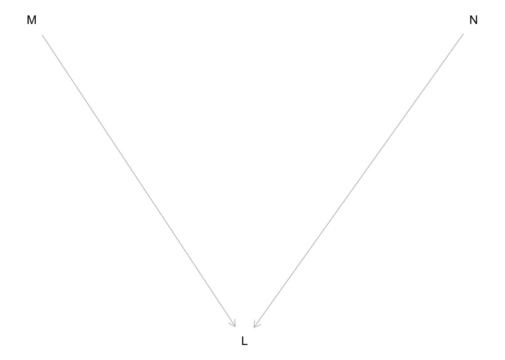
We hypothesise that plant-soil feedback becomes stronger (i.e. has a stronger negative effect on plant biomass) with increasing nitrogen. Based on this experimental design, we will use the following linear model to analyse this experiment:
\[log(L_{i}) = \alpha + \beta_1\text{N}_{i} + \beta_2\text{M}_{i} + \beta_3\text{N}_{i}\text{M}_{i} + \epsilon_{i}\]
\[\epsilon_{i} \sim Normal(0, \sigma_{residual})\] Based on this model, we can set-up the statistical hypotheses as follows:
\[H_0: \beta_3 \ge 0\] \[H_A: \beta_3 \lt 0\]
Therefore, if \(\beta_3\) is significantly less than zero, \(P<0.025\), we would interpret this as evidence that plant-soil feedback does become stronger with increasing N.
Simulated data
To design write the code used to perform the above hypothesis tests, we will simulate data that is consistent with this experiment (i.e. the data that we expect to obtain).
# the exact values of the parameters are not that important in this case
n_rep = 8
sigma_residual = 0.10
N_lev = log(c(4, 8, 16, 32, 64))
M_lev = c(0, 1)
alpha = 4.5
beta1 = 0.2
beta2 = -0.12
beta3 = -0.1
# simulate nitrogen values
N <- rep(rep(N_lev, each = n_rep), length(M_lev))
# simulate microbe presence-absence
M <- rep(M_lev, each = length(N_lev) * n_rep)
# simulate the expected log plant biomass
mu <- (beta1 * (N - min(N))) + (beta2 * M) + (beta3 * (N - min(N)) * M)
# transform back from log-scale and apply alpha
Y <- alpha * exp(mu + rnorm(n = length(N), mean = 0, sd = sigma_residual))
# return the simulated data as a data frame
dat_e1 <- dplyr::tibble("N" = N, "M" = M, "L" = Y)Data analysis
In addition to the standard data cleaning and exploratory data analysis procedures that must occur in any data-driven scientific project, there are two important transformations that need to be done for the analysis. First, we will substract the minimum nitrogen-level (log-scale) so that the lowest nitrogen-level in the model and, therefore, the intercept term represents the expected plant biomass at the lowest-level of nitrogen without microbes. Additionally, we will need to log-transform the plant biomass variable.
# data transformations
# translate nitrogen by the minimum
dat_e1$N_trans <- with(dat_e1, N - min(N))
# log-transform plant biomass
dat_e1$L_log <- log(dat_e1$L)
# check the data
head(dat_e1)# A tibble: 6 × 5
N M L N_trans L_log
<dbl> <dbl> <dbl> <dbl> <dbl>
1 1.39 0 4.67 0 1.54
2 1.39 0 4.33 0 1.47
3 1.39 0 3.54 0 1.26
4 1.39 0 4.14 0 1.42
5 1.39 0 5.27 0 1.66
6 1.39 0 4.82 0 1.57Now we are ready to fit the model:
# fit the statistical model
lm_e1 <- lm(L_log ~ M + N_trans + M:N_trans, data = dat_e1)Prior to interpreting the results, we need to check the model assumptions. We will do this using a graphical analysis of the residuals. Specifically, we will check that the distribution of the model residuals are at least approximately normal:
# check for residual normality
lm_e1_res <- residuals(lm_e1)
# plot a qqplot of the residuals
qqnorm(lm_e1_res, main = "Residual Q-Q Plot")
qqline(lm_e1_res, col = "red")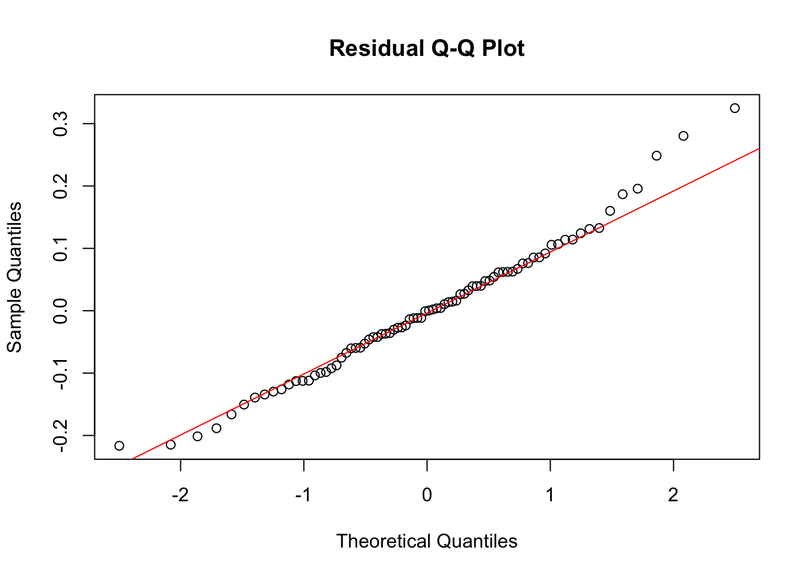
Next, we will test the homogeneity of variance assumption by examining a plot of the residuals versus the fitted values. There should be no pattern in the data:
# plot residuals vs fitted values
plot(lm_e1$fitted.values, residuals(lm_e1),
xlab = "Fitted Values",
ylab = "Residuals",
main = "Residuals vs Fitted Values",
pch = 20, col = "blue")
# add a horizontal line at 0 for reference
abline(h = 0, col = "red", lty = 2)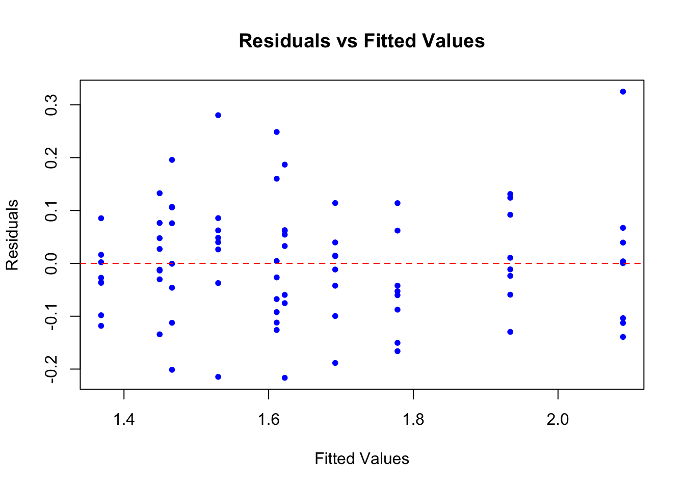
If these assumptions are met as indicated by the graphs above (although whether the assumptions are met will always be a judgement call), we can then examine the results and evaluate our hypothesis:
# check the model summary
summary(lm_e1)
Call:
lm(formula = L_log ~ M + N_trans + M:N_trans, data = dat_e1)
Residuals:
Min 1Q Median 3Q Max
-0.21654 -0.06955 -0.00021 0.06241 0.32485
Coefficients:
Estimate Std. Error t value Pr(>|t|)
(Intercept) 1.46636 0.03043 48.182 < 2e-16 ***
M -0.09796 0.04304 -2.276 0.0257 *
N_trans 0.22489 0.01792 12.546 < 2e-16 ***
M:N_trans -0.10817 0.02535 -4.267 5.64e-05 ***
---
Signif. codes: 0 '***' 0.001 '**' 0.01 '*' 0.05 '.' 0.1 ' ' 1
Residual standard error: 0.1111 on 76 degrees of freedom
Multiple R-squared: 0.7975, Adjusted R-squared: 0.7895
F-statistic: 99.78 on 3 and 76 DF, p-value: < 2.2e-16In this output, the \(\beta_3\) parameter is the “M:N_trans” parameter. This output indicates that \(\beta_3\) is significantly less than zero (\(t_1 = -4.03; P = 0.00013\)). Therefore, we would reject our null hypothesis (\(H_0: \beta_3 \ge 0\)) and infer support for our alternative hypothesis (\(H_0: \beta_3 < 0\)).
Visualise the results
To visualise the results, we will plot the model against the raw data. In addition, we will calculate plant-soil feedback using the metric used by Goossens et al. (2023, npj):
\[ PSF_j = \frac{\overline{L}_{microbes} - \overline{L}_{no \ microbes}}{\overline{L}_{no \ microbes}} \]
In this equation, the \(\overline{L}\) is the average across replicates of plant biomass for a given nitrogen level. Therefore, to obtain a measurement of the error around this estimate for each level of nitrogen, we used bootstrapping.
# function for bootstrapping the sample and estimating psf
bootstrap_psf <- function(data, n, resp = "L") {
# bootstrap the psf estimates n times
resampled_psf <- lapply(1:n, function(i) {
# make a y-variable
data$Y <- data[[resp]]
# get bootstrap indices
indices <- sample(seq_len(nrow(data)), replace = TRUE)
# extract the re-sampled data
resample_i <- data[indices, ]
# calculate psf
suppressMessages(
resample_i_wide <-
resample_i |>
dplyr::group_by(N, M) |>
dplyr::summarise(Y_m = mean(Y, na.rm = TRUE)) |>
tidyr::pivot_wider(id_cols = "N",
names_from = "M",
values_from = "Y_m")
)
names(resample_i_wide) <- c("N", "M_abs", "M_pres")
# calculate plant-soil feedback
resample_i_wide$psf <- with(resample_i_wide, (M_pres-M_abs)/M_abs)
# return the re-sampled data
return(resample_i_wide)
})
# return the output
return(dplyr::bind_rows(resampled_psf, .id = "bootstrap_i"))
}Plot the model results along with the bootstrapped plant-soil feedback metrics:
# log-scale
# get model predictions
pred_e1 <- dplyr::as_tibble(predict(lm_e1, interval = "confidence"))
# add the fit statistics to the data
plot_e1 <-
dat_e1 |>
dplyr::mutate(fit = pred_e1$fit,
lwr = pred_e1$lwr,
upr = pred_e1$upr)
# plot the data on the log-scale
p1 <-
ggplot(data = plot_e1 |> dplyr::mutate(M = as.character(M))) +
geom_point(mapping = aes(x = N, y = L_log, colour = M)) +
geom_line(mapping = aes(x = N, y = fit, colour = M)) +
geom_ribbon(mapping = aes(x = N, ymin = lwr, ymax = upr, fill = M), alpha = 0.1) +
ylab("Native biomass (mg) (log-scale)") +
xlab("log(N)") +
theme_bw()
# calculate plant soil feedback metric
# bootstrapped
psf_e1_boot <- bootstrap_psf(data = dat_e1, n = 1000, resp = "L")
# summarise these bootstrapped samples
psf_e1_boot <-
psf_e1_boot |>
dplyr::group_by(N) |>
dplyr::summarise(psf_mean = mean(psf, na.rm = TRUE),
psf_sd = sd(psf, na.rm = TRUE), .groups = "drop")
# plot the change
p2 <-
ggplot(data = psf_e1_boot,
mapping = aes(x = N, y = psf_mean)) +
geom_point() +
geom_errorbar(mapping = aes(ymin = psf_mean - psf_sd,
ymax = psf_mean + psf_sd),
width = 0) +
ylab("Plant-soil feedback") +
xlab("log(N)") +
theme_bw()
cowplot::plot_grid(p1, p2, nrow = 1, rel_widths = c(1.3, 1))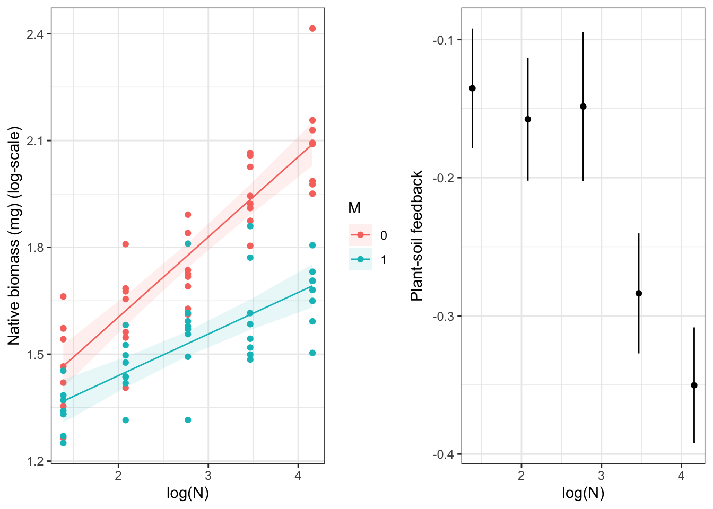
Experiment 2:
The analysis for experiment 2 is very similar to that for experiment 1. The causal structure, represented by the Directed Acyclic Graph, models the biomass of invasive plants (I) after 8-weeks of growh as a function of experimental nitrogen-level (N) and the presence or absence of soil microbes (M).
dag2 <- dagitty::dagitty(x = 'dag {
bb="0,0,1,1"
I [pos="0.28,0.29"]
M [pos="0.215,0.200"]
N [pos="0.35,0.200"]
M -> I
N -> I
}'
)
plot(dag2)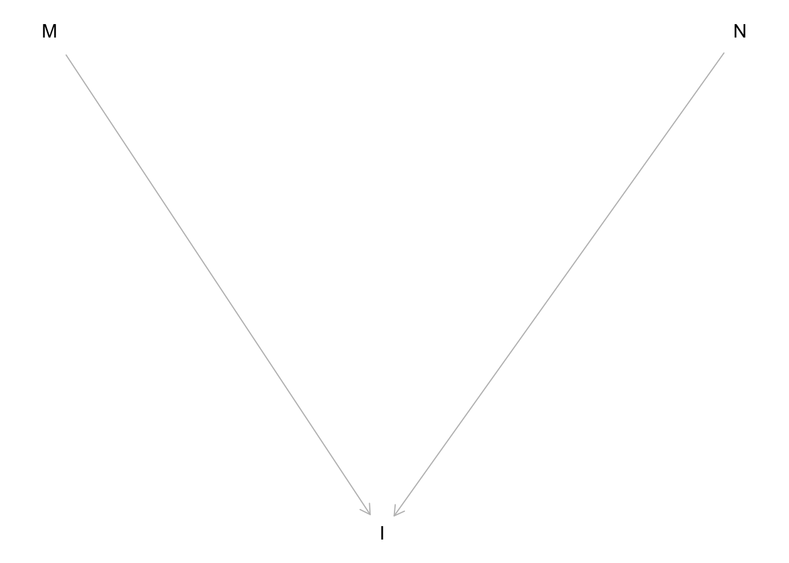
We hypothesise that plant-soil feedback does not change or becomes weaker (i.e. has a weaker negative effect on plant biomass) with increasing nitrogen for invasive species. Based on this experimental design, we will use the following linear model to analyse this experiment:
\[ log(I_{i}) = \alpha + \beta_1\text{N}_{i} + \beta_2\text{M}_{i} + \beta_3\text{N}_{i}\text{M}_{i} + \epsilon_{i} \] \[ \epsilon_{i} \sim Normal(0, \sigma_{residual}) \] Based on this model, we can set-up the statistical hypotheses as follows. The null hypothesis is that plant-soil feedback does not change or becomes weaker:
\[ H_0: \beta_3 \ge 0 \]
The alternative hypothesis is that plant-soil feedback becomes stronger.
\[ H_A: \beta_3 \lt 0 \]
Therefore, if \(\beta_3\) is significantly less than zero (i.e. \(P < 0.025\)), we would interpret this as evidence that plant-soil feedback does become stronger with increasing N. However, if \(\beta_3\) is not significantly less than zero (i.e. \(P \ge 0.025\)), then we cannot reject the null hypothesis and we infer that nitrogen does not modify the strength of plant-soil feedback in invasive species.
Simulated data
We will simulate data that is consistent with this experiment (i.e. the data that we expect to obtain).
# the exact values of the parameters are not that important in this case
n_rep = 8
sigma_residual = 0.10
N_lev = log(c(4, 8, 16, 32, 64))
M_lev = c(0, 1)
alpha = 4.5
beta1 = 0.2
beta2 = -0.12
beta3 = 0
# simulate nitrogen values
N <- rep(rep(N_lev, each = n_rep), length(M_lev))
# simulate microbe presence-absence
M <- rep(M_lev, each = length(N_lev) * n_rep)
# simulate the expected log plant biomass
mu <- (beta1 * (N - min(N))) + (beta2 * M) + (beta3 * (N - min(N)) * M)
# transform back from log-scale and apply alpha
Y <- alpha * exp(mu + rnorm(n = length(N), mean = 0, sd = sigma_residual))
# return the simulated data as a data frame
dat_e2 <- dplyr::tibble("N" = N, "M" = M, "I" = Y)Data analysis
As with experiment 1, we will substract the minimum nitrogen-level (log-scale) so that the lowest nitrogen-level in the model and, therefore, the intercept term represents the expected plant biomass at the lowest-level of nitrogen without microbes. Additionally, we will need to log-transform the plant biomass variable.
# data transformations
# translate nitrogen by the minimum
dat_e2$N_trans <- with(dat_e2, N - min(N))
# log-transform plant biomass
dat_e2$I_log <- log(dat_e2$I)
# check the data
head(dat_e2)# A tibble: 6 × 5
N M I N_trans I_log
<dbl> <dbl> <dbl> <dbl> <dbl>
1 1.39 0 4.30 0 1.46
2 1.39 0 4.41 0 1.48
3 1.39 0 4.27 0 1.45
4 1.39 0 4.24 0 1.45
5 1.39 0 4.67 0 1.54
6 1.39 0 4.44 0 1.49Next, we fit the model.
# fit the statistical model
lm_e2 <- lm(I_log ~ M + N_trans + M:N_trans, data = dat_e2)Check model assumptions using a graphical analysis of the residuals: Residual normality.
# check for residual normality
lm_e2_res <- residuals(lm_e2)
# plot a qqplot of the residuals
qqnorm(lm_e2_res, main = "Residual Q-Q Plot")
qqline(lm_e2_res, col = "red")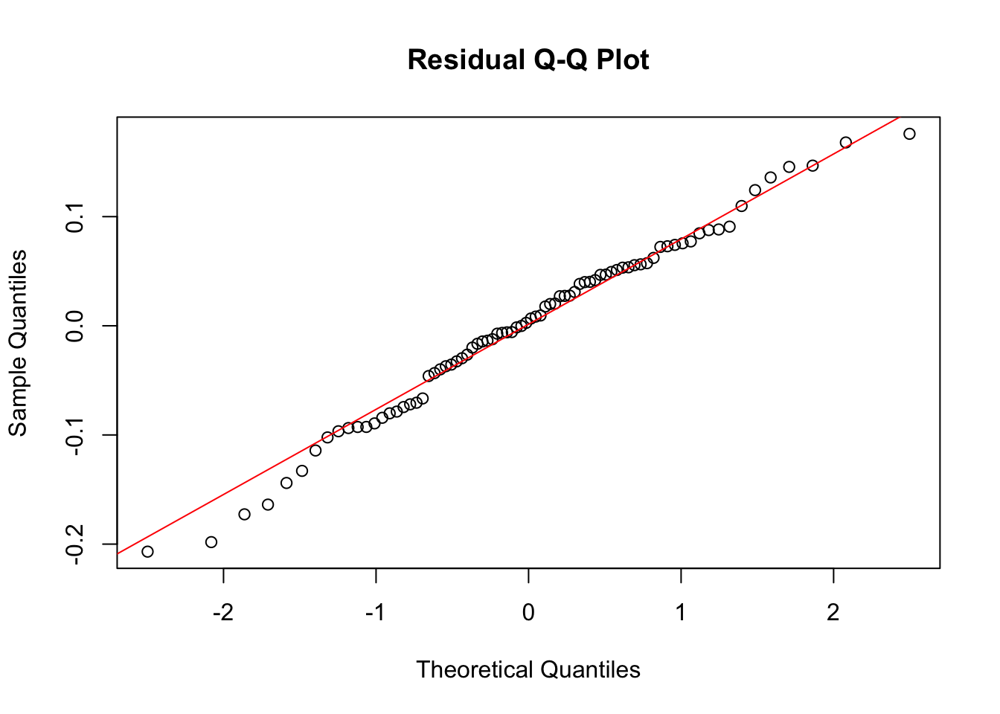
Homogeneity of variance assumption:
# plot residuals vs fitted values
plot(lm_e2$fitted.values, residuals(lm_e2),
xlab = "Fitted Values",
ylab = "Residuals",
main = "Residuals vs Fitted Values",
pch = 20, col = "blue")
# add a horizontal line at 0 for reference
abline(h = 0, col = "red", lty = 2)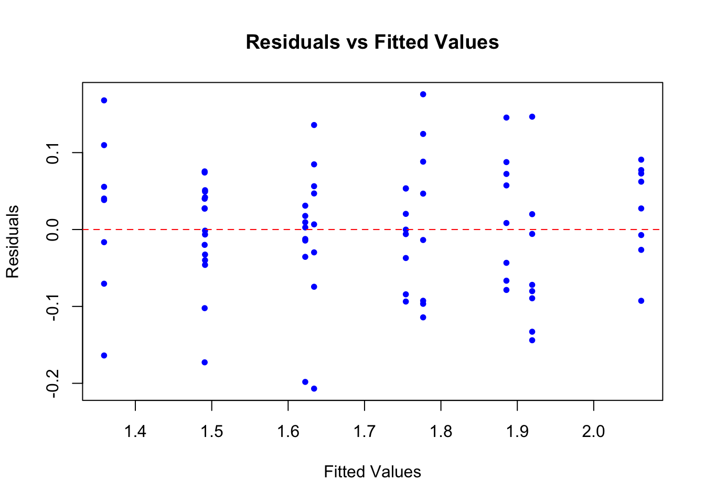
Once the assumptions have been checked and deemed to have been passed, we can check the model results:
# check the model summary
summary(lm_e2)
Call:
lm(formula = I_log ~ M + N_trans + M:N_trans, data = dat_e2)
Residuals:
Min 1Q Median 3Q Max
-0.206887 -0.051153 0.004689 0.054066 0.175880
Coefficients:
Estimate Std. Error t value Pr(>|t|)
(Intercept) 1.49122 0.02313 64.483 < 2e-16 ***
M -0.13217 0.03270 -4.041 0.000126 ***
N_trans 0.20593 0.01362 15.119 < 2e-16 ***
M:N_trans -0.01597 0.01926 -0.829 0.409636
---
Signif. codes: 0 '***' 0.001 '**' 0.01 '*' 0.05 '.' 0.1 ' ' 1
Residual standard error: 0.08444 on 76 degrees of freedom
Multiple R-squared: 0.8657, Adjusted R-squared: 0.8604
F-statistic: 163.3 on 3 and 76 DF, p-value: < 2.2e-16The \(\beta_3\) parameter is the “M:N_trans” parameter. This output indicates that \(\beta_3\) is not significantly less than zero (\(t_1 = 1.1; P = 0.27\)). Therefore, we cannot reject the null hypothesis (\(H_0: \beta_3 \ge 0\)) and, therefore, that plant-soil feedback does not become stronger with nitrogen for invasive species.
Visualise the results
We will visualise these results in the same way that we visualised the results for experiment 1 but this time we will, of course, focus on invasive species biomass.
# log-scale
# get model predictions
pred_e2 <- dplyr::as_tibble(predict(lm_e2, interval = "confidence"))
# add the fit statistics to the data
plot_e2 <-
dat_e2 |>
dplyr::mutate(fit = pred_e2$fit,
lwr = pred_e2$lwr,
upr = pred_e2$upr)
# plot the data on the log-scale
p1 <-
ggplot(data = plot_e2 |> dplyr::mutate(M = as.character(M))) +
geom_point(mapping = aes(x = N, y = I_log, colour = M)) +
geom_line(mapping = aes(x = N, y = fit, colour = M)) +
geom_ribbon(mapping = aes(x = N, ymin = lwr, ymax = upr, fill = M), alpha = 0.1) +
ylab("Invasive biomass (mg) (log-scale)") +
xlab("log(N)") +
theme_bw()
# calculate plant soil feedback metric
# bootstrapped
psf_e2_boot <- bootstrap_psf(data = dat_e2, n = 1000, resp = "I")
# summarise these bootstrapped samples
psf_e2_boot <-
psf_e2_boot |>
dplyr::group_by(N) |>
dplyr::summarise(psf_mean = mean(psf, na.rm = TRUE),
psf_sd = sd(psf, na.rm = TRUE), .groups = "drop")
# plot the change
p2 <-
ggplot(data = psf_e2_boot,
mapping = aes(x = N, y = psf_mean)) +
geom_point() +
geom_errorbar(mapping = aes(ymin = psf_mean - psf_sd,
ymax = psf_mean + psf_sd),
width = 0) +
ylab("Plant-soil feedback") +
xlab("log(N)") +
theme_bw()
cowplot::plot_grid(p1, p2, nrow = 1, rel_widths = c(1.3, 1))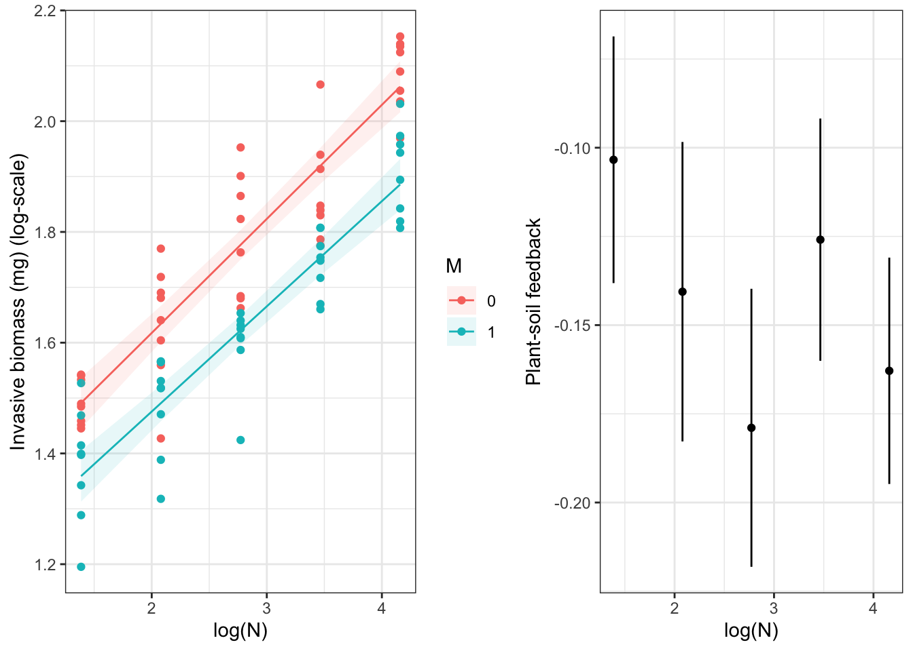
Experiment 3:
dag3 <- dagitty::dagitty(x = 'dag {
bb="0,0,1,1"
I [exposure,pos="0.284,0.180"]
L [outcome,pos="0.285,0.300"]
M [pos="0.153,0.180"]
N [pos="0.418,0.180"]
I -> L
M -> L
N -> L
}
'
)
plot(dag3)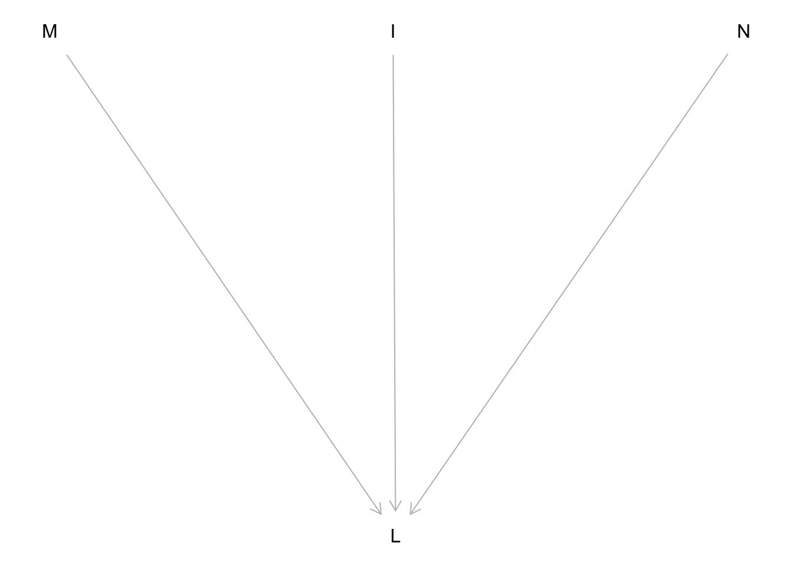
\[ log(L_{i}) = \alpha + \beta_1\text{N}_{i} + \beta_2\text{M}_{i} + \beta_3\text{I}_{i} + \beta_4\text{N}_{i}\text{M}_{i} + \beta_5\text{I}_{i}\text{M}_{i} + \beta_6\text{I}_{i}\text{N}_{i} + \beta_7\text{N}_{i}\text{M}_{i}\text{I}_{i} + \epsilon_{i} \]
\[ \epsilon_{i} \sim Normal(0, \sigma_{residual}) \]
\[ H_0: \beta_7 \ge 0 \]
The alternative hypothesis is that plant-soil feedback becomes stronger.
\[ H_A: \beta_7 \lt 0 \]
Simulated data
We will simulate data that is consistent with this experiment (i.e. the data that we expect to obtain).
# set the number of replicates
n_rep <- 8
# nitrogen-levels
N_lev <- log(c(4, 8, 16, 32, 64))
# soil microbe presence-absence
M_lev <- c(0, 1)
# invasive presence-absence
I_lev <- c(0, 1)
# create a grid of parameters
par_grid <- expand.grid(rep = seq_len(n_rep),
N = N_lev, M = M_lev, I = I_lev)
# extract the variables
N <- par_grid[["N"]]
M <- par_grid[["M"]]
I <- par_grid[["I"]]
# set the model parameters
# residual standard deviation
sigma_residual <- 0.05
# alpha - mean plant biomass without microbes on the natural scale
alpha <- 4.5
# beta1 - expected change in mean plant biomass without microbes on the log-scale
beta1 <- 0.10
# beta2 - expected change in mean plant biomass with and without microbes when N is zero without invasives
beta2 <- -0.25
# beta3 - expected change in mean plant biomass with and without invasives when N is zero without microbes
beta3 <- -0.10
# beta4
beta4 <- -0.05
# beta5
beta5 <- 0
# beta6
beta6 <- 0
# beta7
beta7 <- -0.1
# simulate the expected log plant biomass
mu <- (exp((beta1 * N) + (beta2 * M) + (beta3 * I) + (beta4 * N * M) + (beta5 * I * M) + (beta6 * I * N) + (beta7 * N * M * I) + rnorm(n = length(N), 0, sigma_residual)))
# simulate the observed log plant biomass
L <- alpha*mu
# return the simulated data as a data frame
dat_e3 <- dplyr::tibble("N" = N, "M" = M, "I" = I, "L" = L)Data analysis
We use the same transformations as we used in experiment 1 and 2.
# data transformations
# translate nitrogen by the minimum
dat_e3$N_trans <- with(dat_e3, N - min(N))
# log-transform plant biomass
dat_e3$L_log <- log(dat_e3$L)
# check the data
head(dat_e3)# A tibble: 6 × 6
N M I L N_trans L_log
<dbl> <dbl> <dbl> <dbl> <dbl> <dbl>
1 1.39 0 0 5.21 0 1.65
2 1.39 0 0 5.36 0 1.68
3 1.39 0 0 4.91 0 1.59
4 1.39 0 0 5.29 0 1.67
5 1.39 0 0 5.12 0 1.63
6 1.39 0 0 5.02 0 1.61# fit the statistical model
lm_e3 <- lm(L_log ~ N + M + I + N:M + I:M + I:N + M:I:N, data = dat_e3)Check model assumptions using a graphical analysis of the residuals: Residual normality.
# check for residual normality
lm_e3_res <- residuals(lm_e3)
# plot a qqplot of the residuals
qqnorm(lm_e3_res, main = "Residual Q-Q Plot")
qqline(lm_e3_res, col = "red")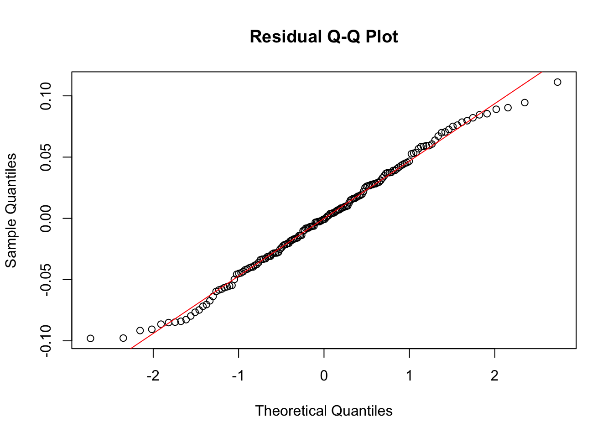
# plot residuals vs fitted values
plot(lm_e3$fitted.values, residuals(lm_e3),
xlab = "Fitted Values",
ylab = "Residuals",
main = "Residuals vs Fitted Values",
pch = 20, col = "blue")
# add a horizontal line at 0 for reference
abline(h = 0, col = "red", lty = 2)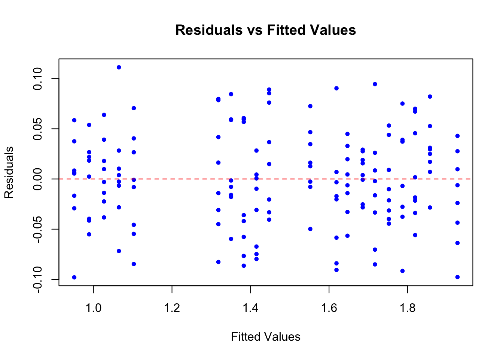
# check the model summary
summary(lm_e3)
Call:
lm(formula = L_log ~ N + M + I + N:M + I:M + I:N + M:I:N, data = dat_e3)
Residuals:
Min 1Q Median 3Q Max
-0.098007 -0.031781 -0.000772 0.031519 0.111250
Coefficients:
Estimate Std. Error t value Pr(>|t|)
(Intercept) 1.506760 0.022563 66.779 < 2e-16 ***
N 0.101073 0.007673 13.173 < 2e-16 ***
M -0.253328 0.031909 -7.939 4.18e-13 ***
I -0.088146 0.031909 -2.762 0.00645 **
N:M -0.054415 0.010851 -5.015 1.46e-06 ***
M:I 0.013217 0.045126 0.293 0.77000
N:I -0.004744 0.010851 -0.437 0.66257
N:M:I -0.096595 0.015345 -6.295 3.13e-09 ***
---
Signif. codes: 0 '***' 0.001 '**' 0.01 '*' 0.05 '.' 0.1 ' ' 1
Residual standard error: 0.04757 on 152 degrees of freedom
Multiple R-squared: 0.9776, Adjusted R-squared: 0.9765
F-statistic: 946.2 on 7 and 152 DF, p-value: < 2.2e-16The \(\beta_7\) parameter is the “N:M:I” parameter. This output indicates that \(\beta_7\) is significantly less than zero () (\(t_1 = -6.6; P < 0.001\)). Therefore, we accept our alternative hypothesis that \(\beta_7\) is less than zero which indicates that the competitive effect of invasives on natives increases with nitrogen but only with microbes.
Function to bootstrap the competition estimate.
# function for bootstrapping the sample and estimating competition between natives and invasives
bootstrap_comp <- function(data, n) {
# bootstrap the psf estimates n times
resampled_comp <- lapply(1:n, function(i) {
# get bootstrap indices
indices <- sample(seq_len(nrow(data)), replace = TRUE)
# extract the re-sampled data
resample_i <- data[indices, ]
# calculate psf
suppressMessages(
resample_i_wide <-
resample_i |>
dplyr::group_by(N, M, I) |>
dplyr::summarise(mean_L = mean(L, na.rm = TRUE)) |>
dplyr::ungroup() |>
tidyr::pivot_wider(id_cols = c("N", "M"),
names_from = "I",
values_from = "mean_L")
)
# rename the variables
names(resample_i_wide) <- c("N", "M", "without_I", "with_I")
# calculate competition
resample_i_wide$competition <- with(resample_i_wide, with_I/without_I)
# return the re-sampled data
resample_i_wide <-
if (any(is.na(resample_i_wide$competition))) {
NA
} else {
resample_i_wide
}
return(resample_i_wide)
})
# remove the datasets with missing values
resampled_comp <- resampled_comp[!sapply(resampled_comp, function(x) is.null(x) || (is.logical(x) && is.na(x)))]
# return the output
return(dplyr::bind_rows(resampled_comp, .id = "bootstrap_i"))
}Plot the model results along with the bootstrapped competition metrics.
# log-scale
# get model predictions
pred_e3 <- dplyr::as_tibble(predict(lm_e3, interval = "confidence"))
# add the fit statistics to the data
plot_e3 <-
dat_e3 |>
dplyr::mutate(fit = pred_e3$fit,
lwr = pred_e3$lwr,
upr = pred_e3$upr)
# plot the data on the log-scale
p1 <-
ggplot(data = plot_e3 |> dplyr::mutate(M = as.character(M), I = as.character(I))) +
geom_point(mapping = aes(x = N, y = L_log, colour = I)) +
geom_line(mapping = aes(x = N, y = fit, colour = I)) +
geom_ribbon(mapping = aes(x = N, ymin = lwr, ymax = upr, fill = I), alpha = 0.1) +
facet_wrap(~ M) +
ylab("Native biomass (mg) (log-scale)") +
xlab("log(N)") +
theme_bw()
# calculate competition
# bootstrapped
comp_e3_boot <- bootstrap_comp(data = dat_e3, n = 1000)
# check the bootstrapped data
summary(comp_e3_boot) bootstrap_i N M without_I
Length:9960 Min. :1.386 Min. :0.0 Min. :3.521
Class :character 1st Qu.:2.079 1st Qu.:0.0 1st Qu.:3.954
Mode :character Median :2.773 Median :0.5 Median :4.801
Mean :2.773 Mean :0.5 Mean :5.001
3rd Qu.:3.466 3rd Qu.:1.0 3rd Qu.:5.991
Max. :4.159 Max. :1.0 Max. :7.143
with_I competition
Min. :2.347 Min. :0.5175
1st Qu.:2.810 1st Qu.:0.7129
Median :3.839 Median :0.8390
Mean :4.112 Mean :0.8041
3rd Qu.:5.427 3rd Qu.:0.9063
Max. :6.605 Max. :1.0056 # summarise these bootstrapped samples
comp_e3_boot_sum <-
comp_e3_boot |>
dplyr::group_by(N) |>
dplyr::summarise(comp_mean = mean(competition, na.rm = TRUE),
comp_sd = sd(competition, na.rm = TRUE))
# plot the change
p2 <-
ggplot(data = comp_e3_boot_sum,
mapping = aes(x = N, y = comp_mean)) +
geom_point() +
geom_errorbar(mapping = aes(ymin = comp_mean - comp_sd,
ymax = comp_mean + comp_sd),
width = 0) +
ylab("Competition") +
xlab("log(N)") +
theme_bw()
cowplot::plot_grid(p1, p2, nrow = 1, rel_widths = c(2, 1))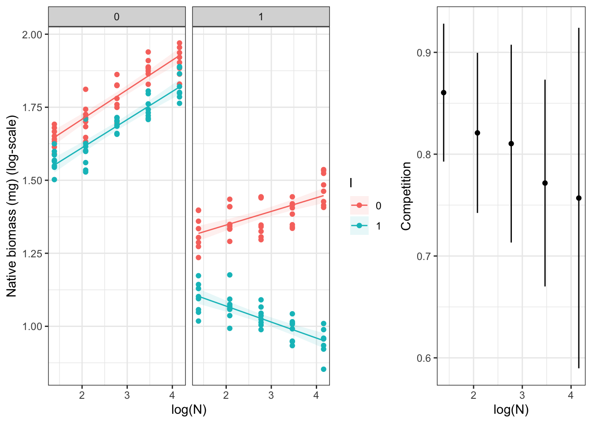